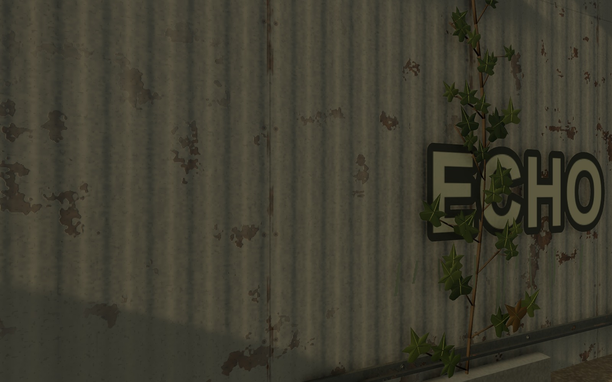
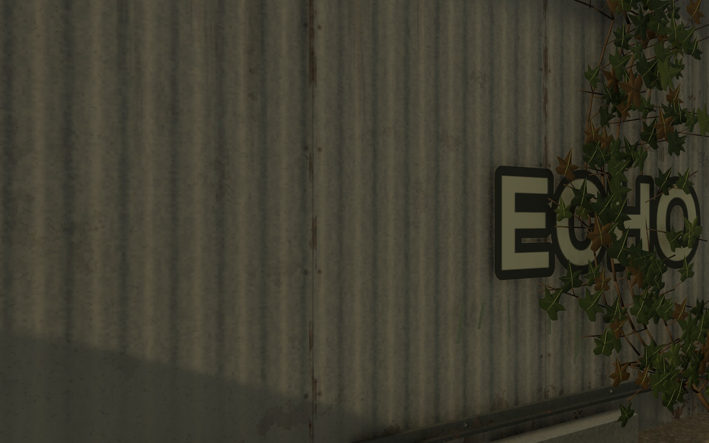
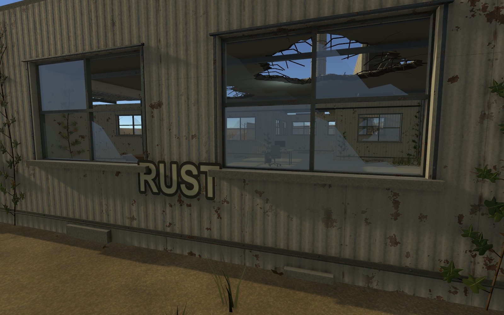
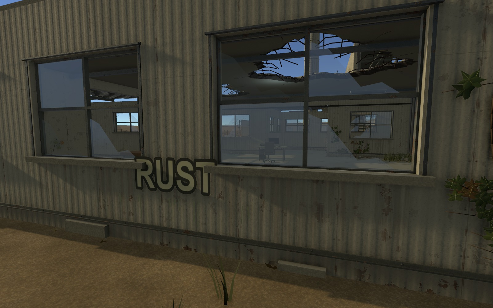
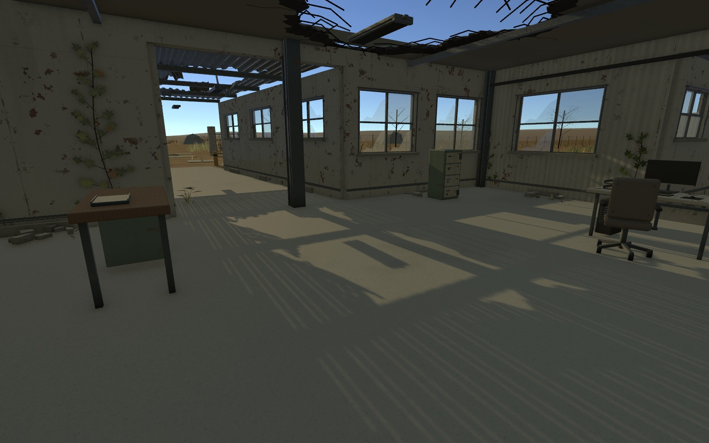
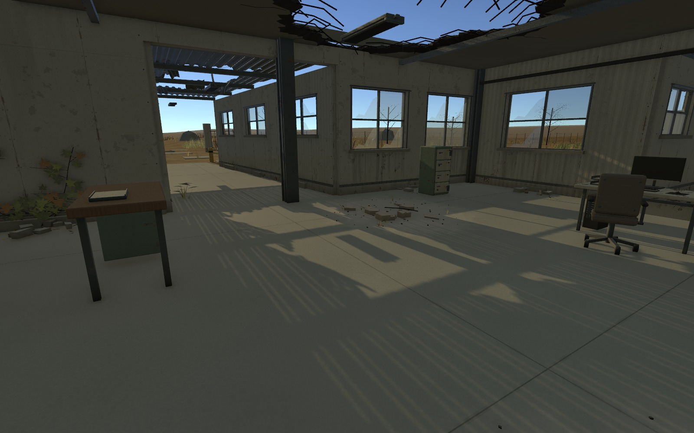

1F 사용 흔적과 환경 연결 보수 V0.01
송예찬 · 2026-11-13
바닥·설비 연결 → 창턱과 벽 하단의 노후화 → 식생·재질별 지붕 잔해. 기존 동선과 가동부 구조를 유지했습니다.
슬라이더를 옮겨 같은 카메라의 보수 전·후를 비교하세요. 검수 기록
금속판 근접
보수 전보수 후


식생 배치 변화
보수 전보수 후


콘크리트 지붕 아래 잔해
보수 전보수 후


통행75/75 · 기존2,074 Transform 보존 · 실제Play 825프레임 · 새 경고·오류0. 게임 운행·문 제어는 후속 구현 범위입니다.